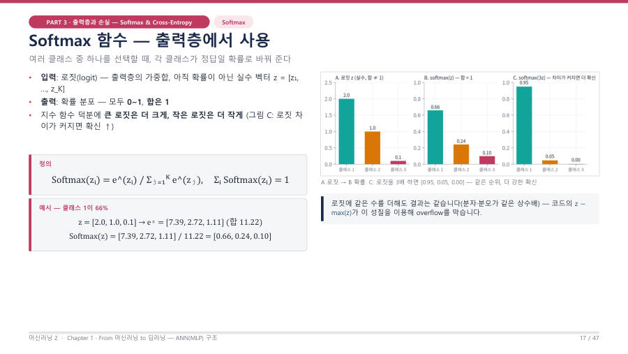

Softmax — 점수(로짓)를 확률로 바꿔요
Softmax는 출력층의 점수(로짓, logit)를 "모두 0~1이고 합이 1인 확률 분포"로 바꿔 주는 함수예요. 식은 Softmax(zᵢ) = e^(zᵢ) / Σⱼ e^(zⱼ)예요.
로짓은 출력층의 가중합이에요. 아직 확률이 아닌 보통의 실수라서 음수도, 1보다 큰 수도 있어요.
교수님은 "모델이 1.478, −3 같은 값을 뱉으면 사람이 해석을 못 한다. 부장님에게 '결과가 1.478입니다' 하면 '그래서 어쩌라고' 한다"고 했어요. 그래서 합이 1인 확률로 바꿔 줘요.
후보 세 명의 점수가 2.0, 1.0, 0.1이라면 각 점수에 e를 거듭제곱해서(음수가 없는 양수로 만들고 격차를 키움) 전체 합으로 나눠 득표율로 바꾸는 거예요. 득표율을 다 더하면 항상 100%(= 1)예요.
강의자료의 대표 예제예요. 로짓 z = [2.0, 1.0, 0.1]이에요.
1번 클래스가 66%, 2번이 24%, 3번이 10%예요. 점수가 가장 큰 클래스가 확률도 가장 커요. 그리고 0.66 + 0.24 + 0.10 = 1이에요.

그림 읽는 법은 이래요. A는 로짓 막대(2.0, 1.0, 0.1)이고 합이 3.1이라서 아직 확률이 아니에요. B는 순위를 그대로 두고 합이 1이 되게 나눈 확률이에요. C는 로짓을 3배로 키운 결과로, 1등 확률이 0.95까지 올라가지만 순위는 그대로예요.
코드로는 이렇게 써요.
| 코드 줄 | 무슨 뜻 |
|---|---|
z = np.array([2.0, 1.0, 0.1]) | 로짓 3개예요 (클래스 3개) |
np.exp(z - np.max(z)) | 가장 큰 값(2.0)을 먼저 빼고 e의 거듭제곱을 해요. 숫자가 너무 커지는 것(overflow)을 막아요 |
exp_z / np.sum(exp_z) | 각각을 전체 합으로 나눠요. 그래서 합이 1이 돼요 |
실행 결과는 [0.659 0.242 0.099]처럼 나와요. 소수 둘째 자리로 반올림하면 손계산 값 [0.66, 0.24, 0.10]과 같아요. 강의자료 슬라이드에는 긴 소수가 조금 다르게 적혀 있지만 실제로 실행하면 이 값이 나오고, 시험도 소수 둘째 자리까지만 봐요.
Softmax는 출력층의 로짓 벡터를 각 클래스가 정답일 확률로 바꾸는 함수이며, 모든 출력이 0과 1 사이이고 합이 1인 확률 분포가 된다. 지수 함수 때문에 큰 로짓은 더 크게, 작은 로짓은 더 작게 반영된다.
잠깐 확인 — Softmax 출력 세 개를 모두 더하면 얼마인가요?
항상 1이에요. 각각을 전체 합으로 나누었기 때문이에요.
화면을 가리고 "Softmax — 점수(로짓)를 확률로 바꿔요"을(를) 친구에게 설명하듯 한 문장으로 말해 보세요. 막히면 위의 빨간 칸만 다시 보고 넘어가요.
자료: 2주차 · 머신러닝2_chapter1_student_ver.pdf(PART 3·5) · 머신02.txt · 머신러닝07.txt